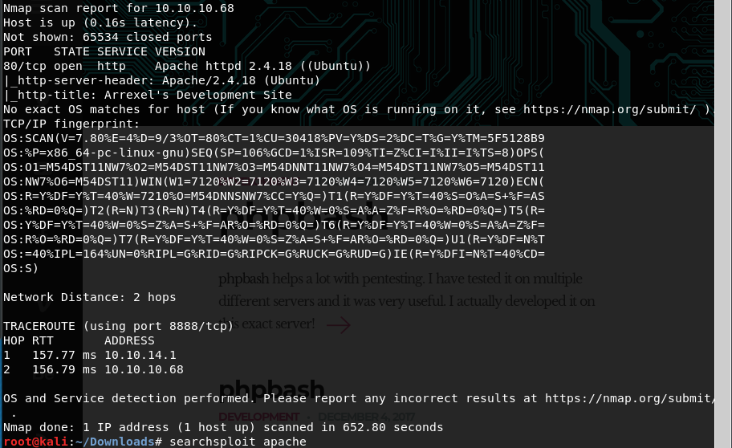

let's go to the web page and see what's there

there is no /admin or etc. let's do some directory busting.

there is interesting directory in here which is dev let's get into this.

okey let's look at phpbash in the index file.


ok so let's go to the phpbash.php in dev file there must be something useful in here as we can see it'll be a web shell.

there it is we could grab user flag so straightforward let's see is there anything in metasploit for apache 2.4

this might be useful but this is a local exploit so let's see what we can in web shell.

okey this might be useful.

we can't swith user to scriptmanager so we have no permission for nopassword operation i've also tried out to take the file in searchsploit for local privesc but as a consequence we can't download this file because we've no permission.
Ok since we've this www-data user we can access /var/www which is the directory of the web page.

uploads was looking interesting since we want to upload this machine some malicious files so we've got this and there is index.html let's see what's there?

so this is a blank html page probably we'll need to generate a payload by way of msfvenom. But in order to exploit that with this way we need to upload this to the target machine so we need to another way
So what we can do is going to google and saying "php reverse shell" since we need to gain reverse shell through a php web shell.

let's download it but we need to be aware of that we knew there is a tool called php reverse shell actually without that doing this search would be hard actually
let's go to pentestmonkey.net there'll be an explanation in there.

ok let's take this file in github.

copy paste to rev.php and save and change these

let's get that file into target machine through python server and we need to set a listener on 1234

get the file through wget on target machine's web shell.


we could get shell but still we're www-data

Ok What is tty(teletypewriter) > (https://dev.to/napicella/linux-terminals-tty-pty-and-shell-192e) , (https://unix.stackexchange.com/questions/4126/what-is-the-exact-difference-between-a-terminal-a-shell-a-tty-and-a-con)
TCM
"TTY is what prints out stuff to the terminal. We're not in a teletype shell we need to improve this. This is something you should familiarize yourself with because you will run into this situation even in some real world situations."


we can try one of these for simplicity let's start with first one some modification (because we don't want to /bin/sh we want to /bin/bash) and then if it is fail we can go down through list.
Note: this may kill your shell if it's fail.

that actually worked we was seeing just dollar sign because we don't have tty now we're seeing that www-bashed@bashed. now we're in tty

we can try that but i don't know why it's working <?>


ok no history no sudo privileges that's ok
let's look what we've as directory

sometimes we may see backup directory in here and we may want to dig into that so for that we need to know essential linux directories (etc bin boot opt lib like these)


ok it seems like there is a cron somewhere and execute that test.py periodically my guess is in every one minute so here is the question.
can we overwrite this test.py file with a python code to gain reverse shell? Ok let's go to google and ask that.
and these is a good cheatsheet about that let's take a look at it.

(http://pentestmonkey.net/cheat-sheet/shells/reverse-shell-cheat-sheet)
this is the cheatsheet of all the possible one liners.- TCM "i use that all the time, most commonly bash here but in other terms we can do."

we're just take code not python -c it's just a command and modificate this as /bin/bash, -i is interactive mode (with tty) and we need to supply a lhost and a lport. because that's a reverse shell.

don't forget we're already using port 1234
in here AF_INET is your ipv4 address and SOCK_STREAM is your port

we opened a listening on 2345 +
we host this file(test.py) with a python shell and then we could get with wget on target machine.
Ok in theory whenever this test.py works we can get shell through listener since this is executed every one minute let's wait and see.

ok we're root in thhis machine this worked.